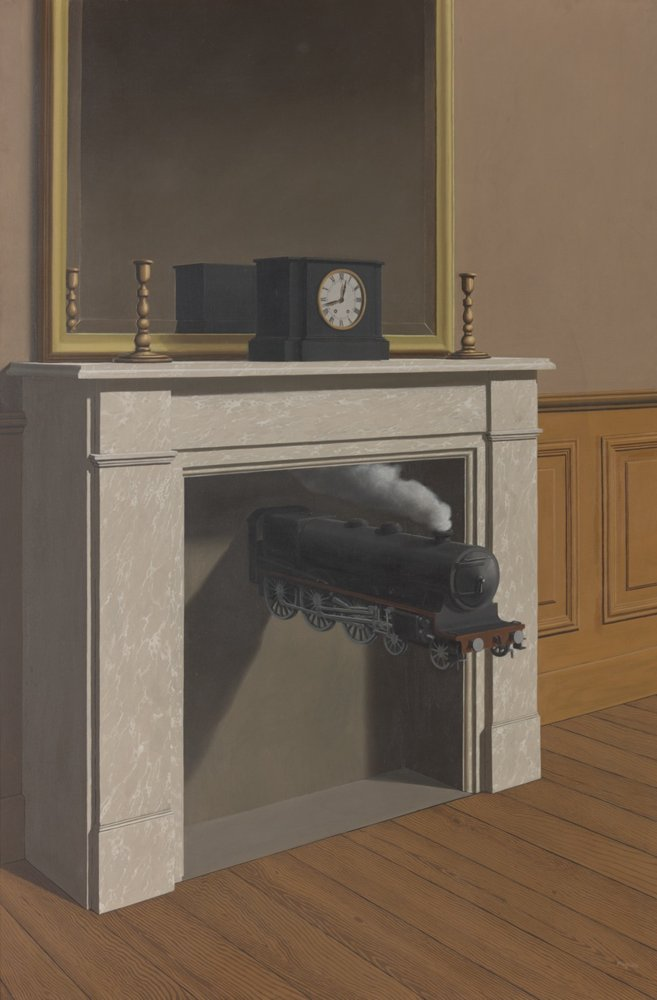

Time Transfixed (La durée poignardée)
René Magritte · 1938 · Oil on canvas · 147 × 98.7 cm · Art Institute of Chicago
In copyright. Look and learn: shown for study, not for download.
Magritte painted this for the British patron Edward James, and it was the second picture delivered for James's ballroom in London. Magritte hoped it would hang at the foot of the staircase, so that the train would stab guests on their way up; James hung it over his own fireplace instead. The French title means, literally, ongoing time stabbed by a dagger, and Magritte was reportedly unhappy with the English one. James sold it to the Art Institute of Chicago in 1970, when he was raising money for his sculpture garden, Las Pozas.